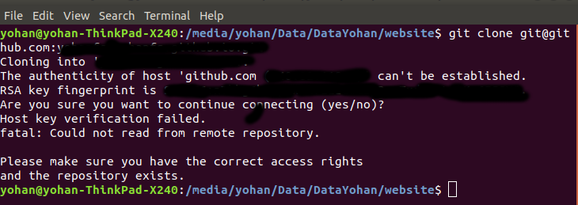

Daftar Isi
Install perangkat lunak
Generate SSH Key
$ ssh-keygen -t rsa -C "your_email@youremail.com"
Secara default, file rsa akan disimpan di C:\Users\username\.ssh (windows) atau home/user/.ssh (ubuntu). Terdapat 2 jenis file rsa, yaitu public key dan private key. Public key selanjutnya dikopikan ke akun git.
$ git config --global user.name "your name" $ git config --global user.email youremail@domain.com
#akun kesatu
Host gitlab.com
HostName gitlab.com
Preferredauthentications publickey
User git
IdentityFile ~/.ssh/id_rsa_kesatu
Add
$ eval `ssh-agent -s` ssh-add id_rsa
Cek agent
$ ssh-add -l
Jika dilihat di home/user, maka tree direktori adalah:
| home/user | ├── .ssh | │ ├── config | │ ├── known_hosts | │ ├── id_rsa_kesatu | │ └── id_rsa_kesatu.pub
$ chmod 600 id_rsa_kesatu
WSL (windows subsystems for linux) adalah environment yang berbeda dengan Windows. Oleh karena itu git harus diinstall kembali di WSL. Langkah-langkahnya seperti penjelasan di Getting Started. Ditambah dengan file config berikut:
#akun kesatu
Host gitlab.com
HostName gitlab.com
Preferredauthentications publickey
User git
IdentityFile ~/.ssh/id_rsa_kesatu
Ketika dicoba untuk mengcloning sebuah repositori, maka akan muncul error sebagai berikut:
Bad owner or permissions on /home/user/.ssh/config fatal: could not read from remote repository Please make sure you have the correct access rights and the repository exists
Solusinya adalah dengan cara menjalankan command berikut:
chmod 600 ~/.ssh/config
Referensi
Tujuan membuat multiple SSH adalah untuk menggunakan akun git lebih dari 1 pada sebuah komputer. Sebagai contoh, berikut ini 2 buah SSH key akan di-generate.
C:\Users\username\.ssh
Generate SSH key
- SSH key 1: ssh-keygen -t rsa -C "your_email@youremail.com"
- SSH key 2: ssh-keygen -t rsa -C "your_email@youremail.com"
Beri nama masing-masing key di atas dengan id_rsa_kesatu dan id_rsa_kedua
#akun kesatu
Host gitlab
HostName gitlab.com
User git
IdentityFile ~/.ssh/id_rsa_kesatu
#akun kedua
Host github.com
HostName github.com
User git
IdentityFile ~/.ssh/id_rsa_kedua
#akun ketiga
Host github.com-yohan
HostName github.com
User git
IdentityFile ~/.ssh/id_rsa_ketiga
eval `ssh-agent -s` ssh-add id_rsa_kesatu ssh-add id_rsa_kedua
ssh-add -l
ssh-add -D
Berdasarkan pengalaman, apabila multiple akun tersebut berasal dari host yang sama, misalnya dari github, maka ada modifikasi tambahan yang perlu dilakukan. Modifikasi tersebut dilakukan pada file config yang bisa ditemukan di dalam folder (.git). Folder ini secara default dalam kondisi hidden sehingga untuk menampilkan perlu unhidden dulu. Pada file config tersebut, url repository perlu disesuaikan dengan hostname. Misalnya:
[remote "origin"] url = git@github.com-yohan:yourRepository.git
Catatan lain perihal config file ini adalah penggunaan tab sebelum kata HostName. Tab yang terlalu panjang ternyata menyebabkan config file tersebut tidak berjalan (lihat gambar di bawah). Oleh karenanya, contoh di atas bisa diikuti agar config tersebut bisa berjalan.
ssh -T git@gitlab.com
Referensi
Supaya git bisa dijalankan di command line di windows, git harus disertakan di System Environment Windows. Path-nya sebagai berikut:
C:\Program Files\Git\cmd
Git Bash merupakan sebuah terminal yang diinstall secara bersamaan dengan git. Git bash ini bisa digunakan sebagaimana terminal pada umumnya. Command-nya juga sama dengan terminal di ubuntu. Salah satu fitur yang saya sukai adalah pengaturan alias di sistem terminal ubuntu yang juga tersedia di Git bash. Alias ini berguna untuk menyederhanakan sebuah command menjadi command yang namanya bisa diset sesuai dengan keinginan. Misalnya, sebuah command: git status bisa menjadi gs. Cara yang perlu dilakukan adalah dengan mengaturnya di file yang bernama .bashrc. Di Windows, file ini disimpan di : C:\Users\username\.bashrc.
Contoh penulisan alias:
alias gs='git status'
Dengan konsep ini, kita juga bisa membuat command untuk menuju folder tertentu. Misalnya ingin menuju folder D:libraryyohan, maka aliasnya:
alias lib='cd /d/library/yohan'
Dengan demikian, command yang panjang dan sering digunakan bisa dipermudah dan working flow bisa menjadi lebih cepat.
Sebelum update, cek versi terlebih dahulu di Terminal:
git --version
Kemudian update dengan cara:
Windows
git update-git-for-windows
Linux
sudo add-apt-repository ppa:git-core/ppa -y sudo apt-get update sudo apt-get install git -y git --version
Referensi
Syntax dasar untuk melakukan push dan pull melalui terminal (di windows: git bash).
$ git status $ git add . $ git commit -m "isi pesan di sini" $ git push origin master
$ git pull origin master
Referensi
Ada 2 cara untuk membuat repositori git. Pertama dengan cara cloning repositori dari remote. Kedua dengan cara menjadikan eksisting folder menjadi git repositori. Untuk kedua langkah tersebut, langkah awalnya adalah sama, yaitu membuat remote repository. Selanjutnya dapat mengikuti langkah-langkah berikut:
git clone "url git repository" `
git init git remote add origin "url git repository"
Setelah folder dibuat dan diisi dengan files, maka selanjutnya data tersebut bisa disimpan di remote repository dengan cara:
git add . git commit -m "initial commit" git push -u origin master
Terkadang ada files di dalam folder git yang tidak ingin kita push ke repositori. Files tersebut memungkinkan di-ignore dengan cara mendefinisikan dalam sebuah file dengan ekstensi .gitignore.
Sebagai contoh folder yang bernama tes ingin diabaikan oleh git maka isi dari file .gitignore adalah:
# Ignore folder named 'tes' files/tes/
File .gitignore ini bisa ditempatkan di folder mana saja di dalam file git. URL folder yang diabaikannya mengunakan URL relative terhadap file .gitignore.
Command untuk meng-cloning git repository sebagai submodule sebagai berikut:
git submodule add [url to git repo] git submodule init
Referensi
Ketika membuat sebuah repositori di git, maka secara default akan dibuatkan sebuah repositori yang bernama master. Repositori ini sebenarnya adalah sebuah branch. Di dalam git, memungkinkan untuk mengcloning branch tersebut dengan menggunakan nama branch yang baru. Dengan demikian, perubahan yang terjadi di branch yang baru tidak langsung mengubah data di master.
Setiap commit yang dilakukan disimpan sebagai snapshot data pada commit tersebut. Contoh snapshot commit pada branch master adalah sebagai berikut:
Data tersebut bisa dilihat dengan command:
git log --oneline
Branch master tersebut memiliki 3 buah commit. Commit yang terakhir ditandai dengan pointer head. Misalnya pada contoh ini, branch yang bernama testing dibuat dengan cara:
git branch testing
Maka akan ada 2 buah branch sebagai berikut:
Sampai sini, branch testing hanya ada di lokal komputer.
Untuk bekerja dengan branch testing, jalankan command berikut:
git checkout testing
Maka pointer head akan berpindah ke branch testing.
Setelah melakukan perubahan di branch testing, kemudian commitlah data tersebut dengan cara:
git add . git commit -m "C3"
Maka history git sekarang menjadi:
Selanjutnya, setelah semua pengembangan di branch testing selesai dikerjakan. Datanya bisa digabungkan dengan branch master. Caranya adalah dengan memindahkan pointer head ke master terlebih dahulu:
git checkout master
Kemudian gabungkan dengan git merge:
git merge testing
Maka history git sekarang menjadi:
Apabila branch testing sudah tidak diperlukan lagi, branch tersebut bisa didelete dengan cara:
git branch -d testing
Referensi
Git Branch harus di-delete di lokal dan di remote. Caranya adalah:
git branch -a #to see the list of branches git branch -d repositoryname
Catatan: Gunakan -D untuk force delete.
git branch -a #to see the list of branches git push origin --delete repositoryname
Ada 2 kondisi untuk merge, fast-forward merge dan three-way merge.
Fast-Forward Merge
Fast-forward merge terjadi ketika ada path yang linier antar branch yang mau di-merge.
Three-Way Merge
Three-way merge terjadi ketika path-nya tidak linear. Merge ini akan menambahkan commit tambahan untuk menggabungkan 2 branch tersebut.
References
$ git reset --soft HEAD~1
HEAD~1 artinya adalah me-reset HEAD (commit terakhir).
$ git log --oneline
Referensi
Pengertian Git dan Github/Gitlab
Berikut ini adalah pengertian Git dan Github/Gitlab berdasarkan pemahaman saya.
Git dan github/gitlab adalah service yang berbeda. Git adalah version control software yang bekerja di lokal komputer. Sedangkan github/gitlab adalah cloud service untuk penyimpanan data Git (server).
Dengan konsep tersebut, saya kemudian berekperimen untuk menyimpan remote data di lokal server dan berhasil dijalankan baik itu di Windows, Linux, dan MacOS.
Tutorial
Berikut ini adalah tutorialnya:
Ubuntu
$ /mnt/remoteFiles/tes
Windows
$ /Y/remoteFiles/tes
Windows/Ubuntu/MacOS | General path
$ ssh://username@ipaddress/path/to/remote.git
Untuk cek path dari metode ssh adalah dengan perintah $ pwd.
Semua path di atas dinamakan /path/to/remote yang akan digunakan pada syntax di penjelasan berikutnya.
$ git init --bare
$ git init $ git remote add origin /path/to/remote
Misalnya:
$ git remote add origin /mnt/remoteFiles/tes
$ git push -u origin master
$ git clone /path/to/remote
Referensi
Syntax
$ git fetch origin
$ git pull origin master
Persamaan
Git fetch and git pull digunakan untuk mengunduh data baru dari remote repository.
Perbedaan
Git fetch hanya mengunduh metadata baru dari remote repository, tetapi tidak mengintegrasikan data baru ke working files.
Git pull mengunduh semua data dan mengintegrasikan data tersebut ke remote repository.
Dikarenakan Git pull akan mengabungkan (merge) data remote ke lokal, maka merge conflict bisa terjadi. Gunakanlah git pull hanya dengan clean working copy. Ini artinya tidak terdapat local changes sebelum pull.
Referensi
Fungsi
Git status berfungsi untuk menunjukkan status, misalnya sudah commit dan push.
Isu
Apabila git yang dibuat pertama kali di sistem operasi Windows dibuka di sistem operasi lain dalam hal ini Linux, maka walaupun data sudah sinkron dengan remote, git status di Linux akan menunjukkan bahwa beberapa file dalam kondisi modified sehingga harus di-add dan commit. Ini dikarenakan ada isu dengan line endings. Untuk mengatasi hal tersebut jalankan command berikut di terminal linux:
git config --global core.autocrlf true
Referensi